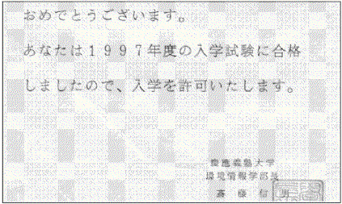
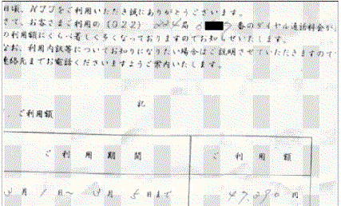

情報・情報伝達
前回「自分で考える機械」という題で、機械と人間について書いた。調子に乗って今回もやってみよう。お題は「情報・情報伝達」。
僕たちは普段、どんな方法で「情報」を受け取っているのだろう。「伝えたいこと」を、どのように伝えているのだろう。「情報伝達」の性質を分析してみよう。
試験の答案が採点されて返ってきた。見ると、一面「×」のあらし。これは、僕がたまに、いや時々、しばしば、日常的に体験する出来事なのだが、この「×」という記号は、一種の情報を僕に与えてくれる。答案用紙の右下に書かれている「０」とか「５」とかいった数字（要するに点数ね）も同様だ。これらの「記号」は、「答えは間違っている」とか「あなたの点数は〜です」などの情報を「伝える」と言えるだろう。情報があるものからあるものへ「伝えられる」とき、そこに媒介するモノがこの「記号」である。「情報は記号を用いて伝達される」のだ。「別に記号はなくても情報は伝わるんじゃないの？」と思う人。ここで僕が言った「記号」は、狭義の記号、「書かれたもの」に限らない。救急車のサイレンは、「道を空けて下さい」「怪我人がいます」などの情報を伝えるし、友達が涙を流せば「悲しさ」やら「感動」やらが伝わってくる。これら全てを「記号＝情報伝達手段」の一種として捉えるところから、情報理論・記号論は始まる。僕たちは、これらの「記号」を用いて情報を受け取るのであって、決して「伝えたいことそのもの」が伝わってくるわけでは、ないのである。
というよりむしろ「伝えたいもの自体」なんてのは、ない。ケーキを食べていて「美味しい」と伝えるときには、顔をほころばせれば充分だ。「このケーキはまったりとしていて、それでいてしつこくなく……」とは言わないし、また、言ったところで「それそのもの」を伝えたことにはならない。「甘さ」の感覚、「におい」の感じ、場面や雰囲気などといったものを統一した脳の興奮状態・記憶状態そのもの、なんてものは、初めから「伝わらないもの」だし、自分でもつかみきれないものなのだ。「感覚そのもの」を記号化して伝達するのではなくて、むしろ記号の構造（言語など）が「感覚」を作るのだ（ソシュールの研究だね）。それをさらに単純化・観念化し、「まったりとして……」などの表現に符号化して、僕たちは「情報」を伝達し合う。そして、「それそのもの」が伝わらないにもかかわらず、たいていの場合「ケーキが美味しかった」という感覚が理解されるところが、「情報伝達」の特質である。
機械における「情報伝達」についても、今言ったような性質は変わらない。コンピュータゲームでは、「マリオ、ジャンプ！」という僕たちの要求を、僕たちは「Ａボタンを押す」ことによって伝える。もっと言えば、「Ａボタンが押された」という情報が「電圧の高低」という情報に量子化され、ＣＰＵがそれに応じてプログラムに入力（情報）を与え、プログラムがそれに反応して画面の一部のドット集合（マリオ）を上にずらすことで、ようやく「マリオがジャンプした（ように見える）」情報が僕たちに届くのだ。
これは全くのところ、観念の化け物だ。実際には、「マリオ」には僕たちの要求は理解されなかったし、「マリオ」はジャンプしなかったし、そもそも「マリオ」って誰やねん。そんな人間は実在しない。「伝えたいことそれ自体」は、どこにも伝わらない。そんなものは存在しない。情報伝達のやりとりで、「それそのもの」以外の何かが伝わり、僕たちの観念に返ってきたのだ。僕たちはＡボタンを押すことによって、マリオをジャンプさせたのではなく、「マリオがジャンプしている状態のイメージ」を、自分自身に構成させたのだ。
このようなことから情報「伝達」とは、相手（自分を含む）の認識に、あるイメージを構成させる手続きだと捉えると包括的であることが解る。一つの記号から我々が受け取る情報が、人によってバラバラであってもよいのである（マリオは「Ａボタンを押す」とジャンプするが、レースゲームで「Ａボタンを押し」ても車はジャンプしない）。これは別に、「伝達ミス」ではないのだ。情報「伝達」が、「伝える」ものではなくて「認識を喚起する」ものである以上、相手の認識構成の手続きの前提となる知的構造が幾通りも存在するからだ。
「情報伝達」を包括的に再定義したところで、「情報」に目を移してみよう。情報という概念をどう捉えればよいだろうか。面白いことに、情報理論は「情報」を、「区別」として扱う。例えば「Ａボタンが押されている」という情報は、要するに「二通りの可能な状態の内の一通り」を示すでしょう。「Ａボタンが押されている状態」を状態Ｓ、「押されていない状態」を状態Ｔとすれば、Ｓの状態にあるわけだ。ここで「区別」と呼ぶのは、これらの状態が全く交換可能なことによる。別に押されている方をＴ、逆をＳと呼んでも良かったわけだ（コンピュータのプログラムを一度でも自分で書いてみればわかるが、機械は決して「Ａボタンが押された」などと解釈しない。ただ、状態ＳかＴかを電子の状態にフィードバックして、処理する演算を人間が巧く調節させるだけだ）。
ともかく「区別（差異）」こそ、「記号」の本質であり、情報なのだ。「幾通りもある可能な状態から、ある状態を選別するもの」が、情報の正体だということ。「×」という記号は、「〇という記号ではない」という区別を与えるものとしての情報なのだ。「正解／不正解」という区別だけが可能な状態であるなら、別に、ある「×」の記号が他の「×」よりも太かったとか、少し線が歪んでいたとかということは、その記号の与える「情報」に違いを生じさせない。「×」があることで、僕たちは答えが「正解か、不正解か」ということを区別することができる。「美味しい」というのだって、「美味しくない」という可能性、「甘すぎる」「苦い」「辛い」等の可能性を排除するものとしての「情報」なのである。
区別する、ということは、区別されるものがなければ成立しない。つまり例えば、先生と生徒に共通にある「正解／不正解」という、可能な状態の前提である。もしいきなり、答案が「(*/∇＼*)」などと採点されたら、テストの点数が「(
＃´ｰ`)」だったら、これらは何か恐るべき情報に違いないが、これは僕たちがこれらの記号にまつわる様々な意図を可能性として読みとるからだ。「情報」の伝達は、送り手と受け手の知識構造による一連の記号の「区別」、それに従う「可能な状態の特定」を以て可能なのだ。
上述のようなことを人間社会に照らし合わせると、「理解できない」とか「誤解する」とかといったことは、まったく当然起こることだとわかる。「それそのもの」が伝わらない以上、受け手の判断構造によって、「記号の主観的意味づけ＝情報」は自ずと異なってくるからだ。
先ほど出した「マリオ」という記号にしても、「マリオブラザーズ」というゲームを知っている人と知らない人では、そこから再構成される印象やイメージはがらりと変わってくる。そういう観点で言えば、芸術的な詩を「理解」できなくても、何も気にする必要はない。それはもともと「理解」するものではなくて、「解釈」するものに過ぎないのだから（たった数文字の文字列情報が、人生の機微そのものを表していようはずがない。そこにある記号から、読み手が勝手にロマンだの感動だのを再構成しているに過ぎないのだ。もし数文字の文字列ごときが「深い」ものであるとすれば、人生なんて参考書より薄っぺらなものだ）。
さらに、「区別されるもの」の集合を共有できないと、誤解を生むことになる。「ちょっとそこの青いてぶくろ取って」と言われる。ぱっと見ると、机の上には水色のてぶくろと、赤いてぶくろ、それに黄色いてぶくろが。「はい」「違うって。青って言ったやん」。イスの上には、確かに真っ青な手袋があった……。依頼された側は、「そこ」という言葉はイスを指しているということが判らず、机の上を見てしまった。机の上には「青／赤／黄」のてぶくろがあったのだ。しかし「青」は、「赤」や「黄」との「区別」としての「青」に過ぎない。部屋のどこにあるのか、「水色／真っ青」の対比としての「青」なのか、可能性を一つに絞るのに充分な情報が、足りないのである。もし初めから、「水色じゃなくて、真っ青なてぶくろ」「イスの上のてぶくろ」などと言われていたなら、自ずと結果も異なっていただろう。
もっと極端な場合、自分と全く異なった判断構造を持っている人には、どんな情報も、伝えたいように伝わらないのだ。例えば僕たちは常識を知っているから、いちいち常識を説明したりはしない。だからこそ、その常識を情報として持たない人、異なる常識しか持たない人に対しては、「常識」を前提とした情報では足りないのだ。ちょうど、数字が読めない人に算数問題の正否を問うのと同じように、あるいは、Ｂボタンを使わないゲーム（Ｂボタンの入力情報に対応しないプログラム）でＢボタンを押すのと同じように、それは決して「相手」に理解されないし、極端な誤解を生むし、無駄なことなのだ。こういった差異に気付かずに無理に自分を通そうとすると、異文化間の断絶や感情的な敵対につながる。常識が違うことが問題になっているのに、「そんなことは常識でしょ！」などという凡愚な発言をしてしまうことになる。
僕たちは自分の判断構造、知の構造に、文化的な影響や環境的な影響を、多分に取り込んでしまっている。既に得た情報、既に得た記号の解釈が存在するのだ。「知は構造化されている」のだ。そしてそれらは、人によってかなりバラバラであり得る。そういう差異から目をそらし、情報が伝わらないから、理解されないからと、どうこう言っても始まらない。
あなたは、ちょっと空が光ったぐらいで、それをＵＦＯ（宇宙人の乗り物、という意味で）だと思いますか？ それをＵＦＯ存在の情報として処理してしまう人間もいるのである。当たり前だが、それは彼が「空が光る」という情報だけで、他の全ての可能性を否定できるような判断構造を持っているからだ。逆に僕たちは、そうではない、そんな判断はおかしい、と見なすような判断構造を持っている。だけど逆もまた然り、なのである。ＵＦＯではない、などという判断はおかしい、と。そして本当のところはわからない。そう、情報とは原理的に、解釈されるものに過ぎないのだから。「空が光る」という情報に対して──「妥当な解釈」「客観的に正しい解釈」などという言葉ほど胡散臭いものは、ない。

ただの紙切れとインクのシミの散らばり方に、僕らは一喜一憂し、人生さえ左右される。ていうか、電話代なんとかせい(笑)